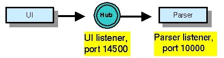
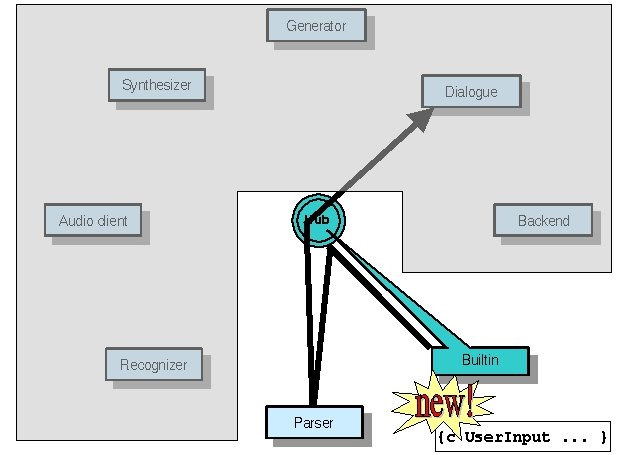
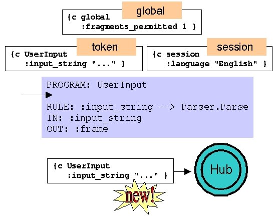
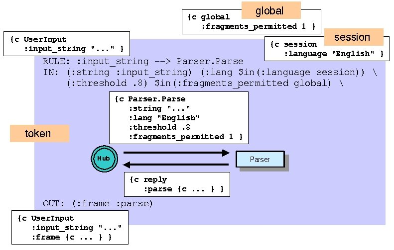

| License / Documentation home / Help and feedback |
In our hub-and-spoke configuration, we've seen that it's the Hub which maintains connections to all the servers and routes the message traffic. We've already learned a great deal about how Hub program files work, even though we haven't looked yet at the technical details. In this lesson, we'll learn the basics of how program files are constructed. We'll learn about other Hub program functionality in future lessons.
There are three types of information in the program file:
There are lots of directives, and each directive expects a value of a certain type or format. We're only going to look at a few of the directives and values. You can consult the complete documentation if you want to know more.
[parse.pgm]Let's look first at the syntax of this fragment.1:;; Use extended syntax (new in version 3.0).
2:
3:PGM_SYNTAX: extended
4:
5:SERVICE_TYPE: UI
6:CLIENT_PORT: 14500
7:
8:SERVER: Parser
8:HOST: localhost
10:PORT: 10000
11:OPERATIONS: Parse
PGM_SYNTAX: "extended"However, for readability purposes, the Hub program file parser also recognizes these values (and sequences of these values) without their delimiting quotation marks. This is the last interpretation considered; so, for instance, a directive value which is a number will be interpreted as such, rather than a string consisting entirely of digit characters.
Each of these is defined by a separate block, terminated by a blank line (or the first directive entry of another block of the same type). The two directive entry blocks in this Hub program file fragment illustrate two dimensions of this distinction.
Since each service type defines a set of supported operations, all providers for a given service type must support the same operations (i.e., define the appropriately named dispatch function). So in the following example, both providers must define the Parse dispatch function:
SERVICE_TYPE: ParserMultiple service types can define the same operation. So, for instance, you might choose to distinguish between parsers for French and parsers for Chinese by classifying them as different service types (there are better ways to do this, but let's assume it for the moment). They can both define the Parse operation, and any providers for these types must support that operation:
OPERATIONS: ParseSERVICE_PROVIDER: Parser
HOST: localhost
PORT: 15000SERVICE_PROVIDER: Parser
HOST: localhost
PORT: 16007
SERVICE_TYPE: ChineseParser
OPERATIONS: ParseSERVICE_TYPE: FrenchParser
OPERATIONS: Parse
SERVICE_TYPE: Parser
OPERATIONS: ParseSERVICE_PROVIDER: Parser
HOST: localhost
PORT: 10000
So this fragment declares two service types, UI and Parser. It tells the Hub to set up a listener for the UI service type, and to contact a service provider for the Parser service type at the local host, port 10000. Here's an illustration:

PROGRAM: UserInputIn many ways, this is about a simple as programs ever get. It corresponds approximately to a small subsection of the toy travel demo.RULE: :input_string --> Parser.Parse
IN: :input_string
OUT: :frame


Each directive in a rule directive entry block has a namespace or namespaces associated with it. The RULE: directive is associated with the token namespace, for instance. The IN: and OUT: directives have both a source namespace (the memory state from which the pairs are drawn) and a target namespace (the memory state which is updated). The IN: directive's source namespace is the token namespace (that is, that's where the values come from), and its target namespace is the message namespace (that is, that's where the values go). For OUT:, it's the other way around.
For this discussion, let's assume a situation where our new UserInput message arrives at the Hub in a context where the global namespace contains the key-value pair :fragments_permitted 1 and the session namespace contains the key-value pair :language "English":

RULE: :input_string --> Parser.ParseIf we want to fire a rule only if the global namespace contains a key-value pair whose key is :fragments_permitted, as in our example, we can write this rule as follows:RULE: $in(:input_string token) --> Parser.Parse
RULE: $in(:fragments_permitted global) --> Parser.ParseSo essentially, a frame key in a directive is a shorthand for a reference to that key in the default namespace.
IN: :input_stringIn both cases, the directive looks for a key-value pair with the key :input_string in the source namespace and inserts the value in the target namespace under the key :input_string.
IN: (:input_string :input_string)
As you may have guessed at this point, you can use this syntax to refer to different keys in the source and target. So let's suppose that the Parse dispatch function expects the key :string, rather than :input_string, and returns the result in a key :parse, rather than :frame. If we wish to preserve the token state shown previously, we could rewrite our rule as follows:
RULE: :input_string --> Parser.ParseThe value of :input_string in the source namespace for IN: (namely, the token) will be copied to :string in the target namespace (namely, the message), and the value of :parse in the source namespace for OUT: (namely, the message return) will be copied to :frame in the target namespace (namely, the token). Here's an illustration:
IN: (:string :input_string)
OUT: (:frame :parse)

IN: (:lang $in(:language session))If the $in operator isn't part of a pair in IN: or OUT:, it's treated as the source key and namespace. The key is also used as the key for the target namespace, and the target namespace is the default. So the following directive entries are equivalent:
IN $in(:language session)
IN: (:language $in(:language session))
IN: ($in(:language message) $in(:language session))
IN: (:threshold .8)These literal values can be any frame key value, just like the values of directives, and the keys can be explicit namespace references.

RULE: :input_string --> Parser.ParseThe existence condition can be negated:
RULE: !:parse_completed --> Parser.ParseThe basic conditions also include numeric comparisons (>, <, =) and string equality (=) and their negations:
RULE: :threshold > .8 --> Parser.ParseThese conditions can be recursively combined using conjunction (&) and disjunction (|):
RULE: :input_string != "ignore" --> Parser.Parse
RULE: :input_string & (:threshold > .8) --> Parser.ParseThe program file reference discusses rule conditions in considerably more detail.
RULE: (:threshold > .8) | (:input_string != "ignore") --> Parser.Parse
Let's do a simple example to illustrate what happens when conditions don't match. Remember our simple program:
PROGRAM: UserInputNow let's send a message that doesn't match.RULE: :input_string --> Parser.Parse
IN: :input_string
OUT: :frame
[Hub program exercise 1]Start the Parser, then the Hub, then finally the unit tester. (When you start the unit tester server, you won't be asked for a reply for the reinitialize message, as you were in the unit tester tutorial. This is because the unit tester is being started with the --ignore_reinitialize flag. See the unit tester reference for more details.) Select "Send new message", select the frame named UserInput, press "Reply Required" and then OK. You'll see the following in the Hub pane:
Unix:
% process_monitor $GC_HOME/tutorial/program_file/nomatch.config
Windows:
c:\> python %PM_DIR%\process_monitor.py %GC_HOME%\tutorial\program_file\nomatch.config
[Hub pane]And the unit tester interaction history will show that the result is almost identical to what was sent:---------------- [ 1] ----------------------
{c UserInput
:string "I WANT TO FLY FROM BOSTON TO LOS ANGELES"
:session_id "Default"
:tidx 1 }
--------------------------------------------Done with token 1 --> returning to owner UI@<remote>:-1
Destroying token 1
[Interaction History pane]It should be clear what has happened. The UserInput program has a single rule, which fires if the token contains the :input_string key. The message we sent contains the :string key, but not the :input_string key, and so the token which is instantiated from the new message doesn't contain the :input_string key. As a result, the rule in the program doesn't fire, which means that the Parser server isn't invoked, and there are no updates to the token state. When the program ends (trivially, since it didn't fire the only rule), it returns the token state to the unit tester, since it asked for a reply.[Sending: new message]
{c UserInput
:string "I WANT TO FLY FROM BOSTON TO LOS ANGELES" }
[Received: reply message]
{c UserInput
:string "I WANT TO FLY FROM BOSTON TO LOS ANGELES"
:session_id "Default" }
Select "File --> Quit" to end this exercise.
However, it's possible both to ignore the response from the server and to terminate the program before the final rule is considered. The simplest way to do this is through two special values of the OUT: directive, none! and destroy!.
You may recall from the toy travel demo that the input string was printed out by the IOMonitor server immediately before it was passed to the Parser server. The corresponding program file fragment looks like this:
PROGRAM: UserInputBy now, we can read the IN: directive entry for the first rule. The value for the :input_string key in the source (token) namespace is copied to the :utterance key in the target (message) namespace, and the :who key in the target namespace is given the literal string value "user". The value OUT: directive informs us that the response from the server will be ignored. So if the token has an :input_string key-value pair, both these rules will be fired at the same time.RULE: :input_string --> IOMonitor.ReportIO
IN: (:utterance :input_string) (:who "user")
OUT: none!RULE: :input_string --> Parser.Parse
IN: :input_string
OUT: :frame
We can see this behavior in action in the following exercise:
[Hub program exercise 2]You'll see a process monitor with four panes. Start the Parser, IOMonitor, Hub and finally the unit tester server. Select "Send new message", and select the frame named UserInput, as before. Press "Reply required", and then OK.
Unix:
% process_monitor $GC_HOME/tutorial/program_file/none.config
Windows:
C:\> python %PM_DIR%\process_monitor.py %GC_HOME%\tutorial\program_file\none.config
Now take a look at the Hub pane. You should see something like this:
[Hub pane]You can see that the two operations in the program matched essentially at the same time, and were sent to their respective servers at essentially the same time. The Parser server provided a response, and the token state is updated as before.----------------[ 1]----------------------
{c UserInput
:input_string "I WANT TO FLY FROM BOSTON TO LOS ANGELES"
:session_id "Default"
:tidx 1 }
--------------------------------------------
Found operation for token 1: IOMonitor.ReportIO
Found operation for token 1: Parser.Parse
Serving message with token index 1 to provider for IOMonitor @ localhost:10050
---- Serve(IOMonitor@localhost:10050, token 1 op_name ReportIO)
Serving message with token index 1 to provider for Parser @ localhost:10000
---- Serve(Parser@localhost:10000, token 1 op_name Parse)
Got reply from provider for Parser @ localhost:10000 : token 1
----------------[ 1]----------------------
{c UserInput
:input_string "I WANT TO FLY FROM BOSTON TO LOS ANGELES"
:session_id "Default"
:tidx 1
:frame {c flight ... } }
--------------------------------------------
Done with token 1 --> returning to owner UI@<remote>:-1
Destroying token 1
Select "File --> Quit" to end this exercise.
PROGRAM: UserInputIf there's no operation you want to fire, there are other ways of destroying the token; we'll talk about these when we talk about the Builtin server and building end-to-end systems.RULE: !:input_string --> IOMonitor.ReportIO
IN: (:utterance "<no input string found>") (:who "user")
OUT: destroy!RULE: :input_string --> IOMonitor.ReportIO
IN: (:utterance :input_string) (:who "user")
OUT: none!RULE: :input_string --> Parser.Parse
IN: :input_string
OUT: :frame
The program file reference has more details about flow of control.
Next: Error handling
| License / Documentation home / Help and feedback |